vignettes/seqtime_tour.Rmd
seqtime_tour.RmdWe start by loading the seqtime library.
library(seqtime)Then, we generate a time series with the Ricker community model. For this, we have to specify the number of species N as well as the interaction matrix A that describes their interactions. We generate an interaction matrix with a specified connectance c at random. The connectance gives the percentage of realized arcs out of all possible arcs (arc means that the edge is directed). The diagonal values, which represent intra-species competition, are set to a negative value. In addition, we introduce a high percentage of negative arcs to avoid explosions.
N=50
A=generateA(N, c=0.1, d=-1)## [1] "Adjusting connectance to 0.1"
## [1] "Initial edge number 2500"
## [1] "Initial connectance 1"
## [1] "Number of edges removed 2205"
## [1] "Final connectance 0.1"
## [1] "Final connectance: 0.1"A=modifyA(A,perc=70,strength="uniform",mode="negpercent")## [1] "Initial edge number 295"
## [1] "Initial connectance 0.1"
## [1] "Number of negative edges already present: 176"
## [1] "Converting 30 edges into negative edges"
## [1] "Final connectance: 0.1"# Generate a matrix using the algorithm by Klemm and Eguiluz to simulate a species network with a more realistic modular and scale-free structure. This takes a couple of minutes to complete.
#A=generateA(N, type="klemm", c=0.1)Next, we generate uneven initial species abundances, summing to a total count of 1000.
y=round(generateAbundances(N,mode=5))
names(y)=c(1:length(y))
barplot(y,main="Initial species abundances",xlab="Species",ylab="Abundance")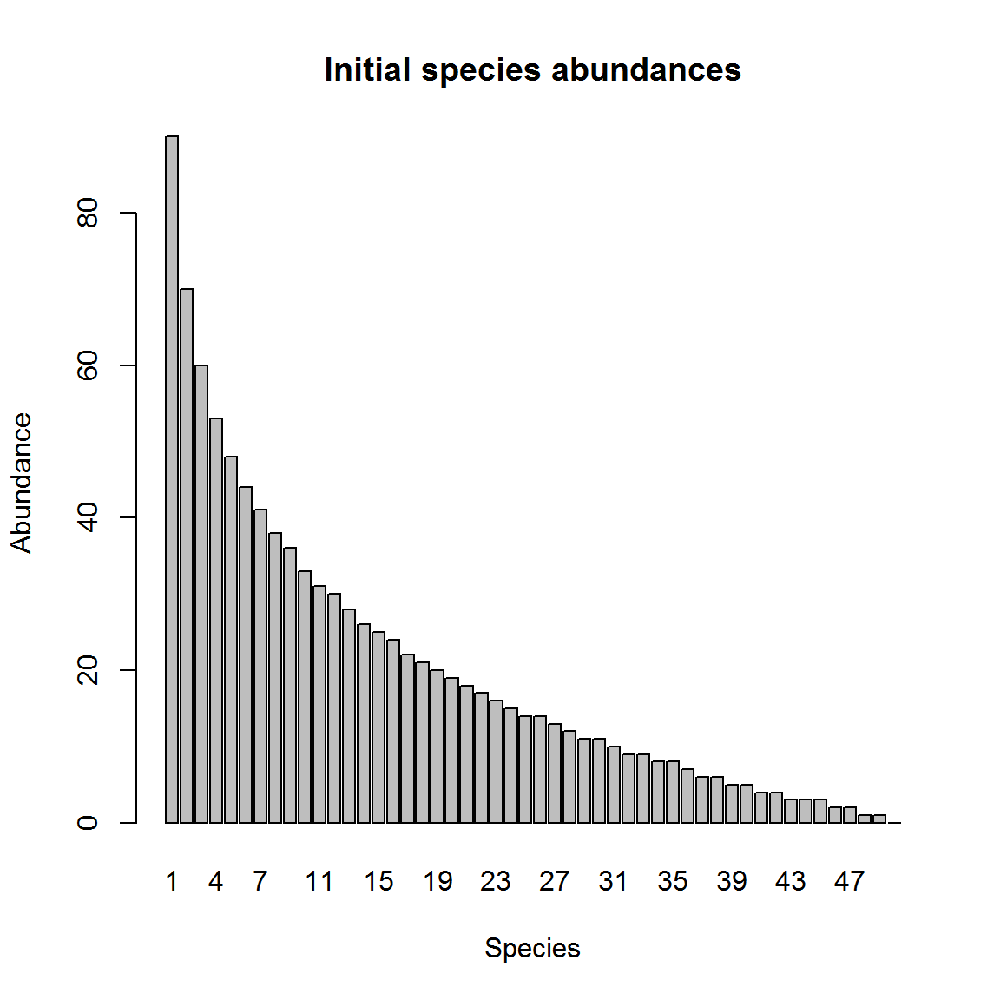
With the initial abundances and the interaction matrix, we can run a simulation of community dynamics with the Ricker model and plot the resulting time series.
# convert initial abundances in proportions (y/sum(y)) and run without a noise term (sigma=-1)
out.ricker=ricker(N,A=A,y=(y/sum(y)),K=rep(0.1,N), sigma=-1,tend=500)
tsplot(out.ricker,main="Ricker")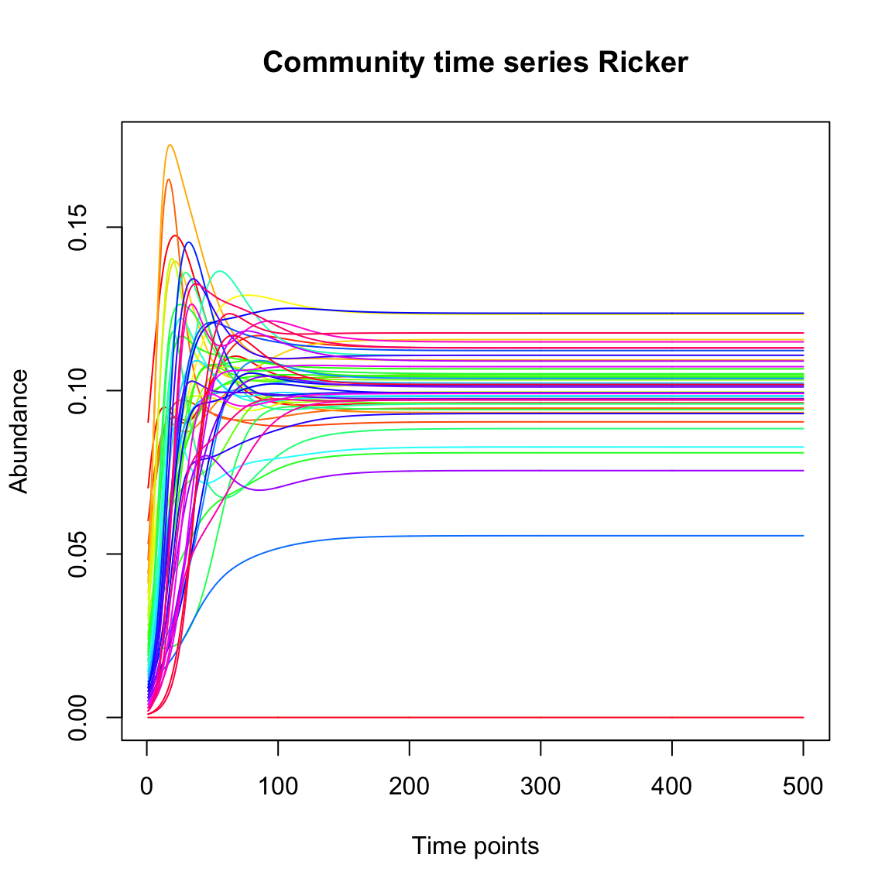
We can then analyse the community time series. First, we plot for each species the mean against the variance. If a straight line fits well in log scale, the Taylor law applies.
# the pseudo-count allows to take the logarithm of species hat went extinct
ricker.taylor=seqtime::taylor(out.ricker, pseudo=0.0001, col="green", type="taylor")## Warning in arrows(upperConfM[val.index], logvars[val.index],
## lowerConfM[val.index], : zero-length arrow is of indeterminate angle and so
## skipped## Warning in arrows(lowerConfM[val.index], logvars[val.index],
## upperConfM[val.index], : zero-length arrow is of indeterminate angle and so
## skipped## Warning in arrows(logmeans[val.index], upperConfV[val.index],
## logmeans[val.index], : zero-length arrow is of indeterminate angle and so
## skipped## Warning in arrows(logmeans[val.index], lowerConfV[val.index],
## logmeans[val.index], : zero-length arrow is of indeterminate angle and so
## skipped## Warning in arrows(upperConfM[val.index], logvars[val.index],
## lowerConfM[val.index], : zero-length arrow is of indeterminate angle and so
## skipped## Warning in arrows(lowerConfM[val.index], logvars[val.index],
## upperConfM[val.index], : zero-length arrow is of indeterminate angle and so
## skipped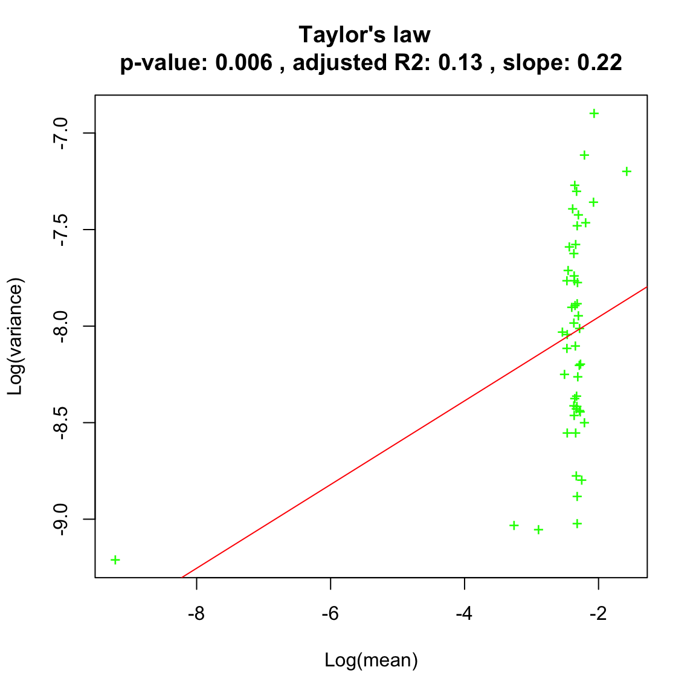
Now we look at the noise types of the species simulated with the noise-free Ricker model. The only noise type identified is black noise.
ricker.noise=identifyNoisetypes(out.ricker, smooth=TRUE)## [1] "Number of taxa below the abundance threshold: 1"
## [1] "Number of taxa with non-significant power spectrum laws: 0"
## [1] "Number of taxa with non-classified power spectrum: 0"
## [1] "Number of taxa with white noise: 0"
## [1] "Number of taxa with pink noise: 0"
## [1] "Number of taxa with brown noise: 0"
## [1] "Number of taxa with black noise: 49"plotNoisetypes(ricker.noise)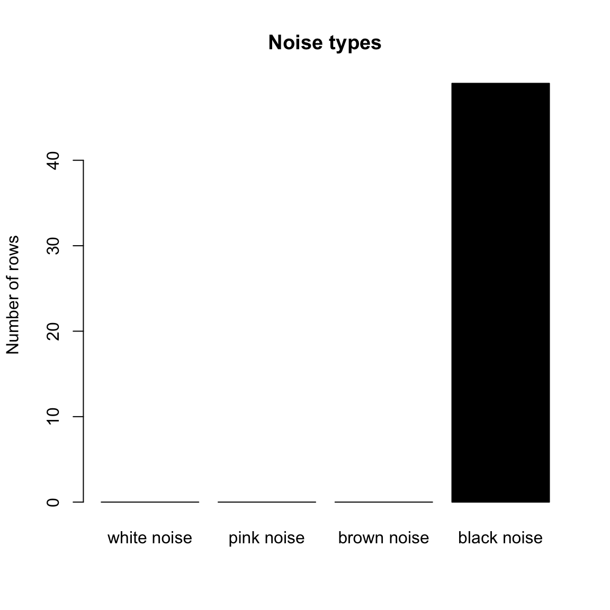
Next, we run the SOI model on the same interaction matrix and initial abundances. For the example, we run it with only 500 individuals and 100 generations.
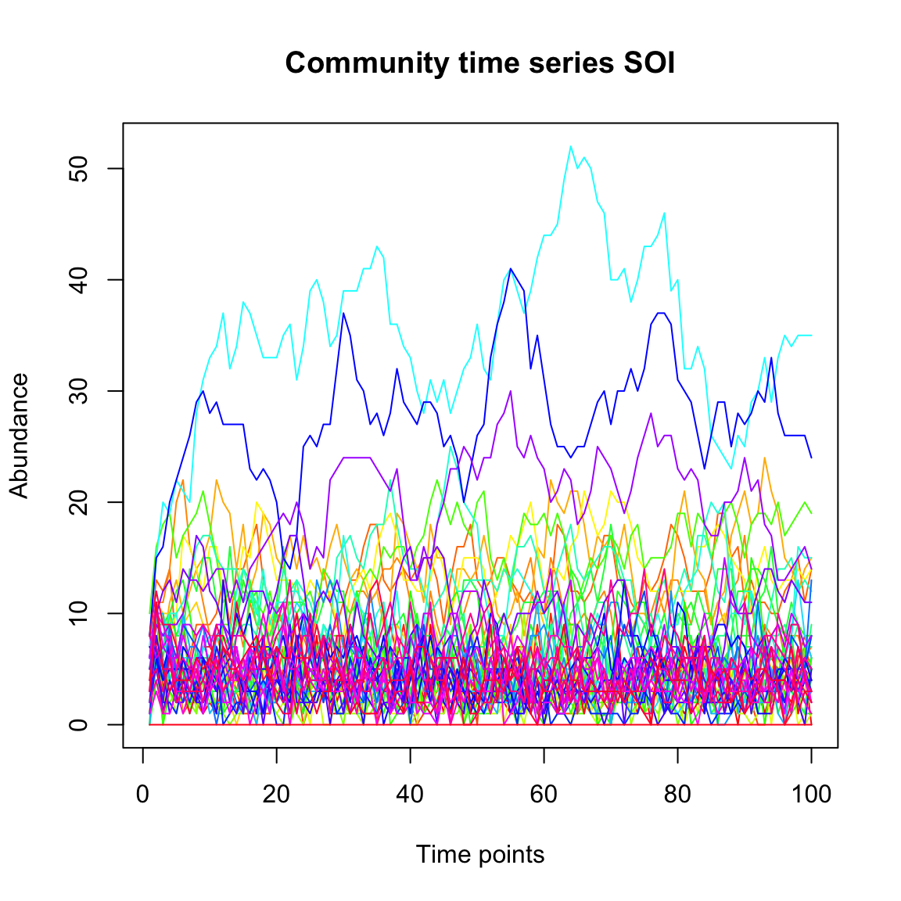
The Taylor law fits far better to time series generated with the SOI than with the Ricker model according to the adjusted R2.
soi.taylor=seqtime::taylor(out.soi, pseudo=0.0001, col="blue", type="taylor")## Warning in arrows(logmeans[val.index], upperConfV[val.index],
## logmeans[val.index], : zero-length arrow is of indeterminate angle and so
## skipped## Warning in arrows(logmeans[val.index], lowerConfV[val.index],
## logmeans[val.index], : zero-length arrow is of indeterminate angle and so
## skipped## Warning in arrows(upperConfM[val.index], logvars[val.index],
## lowerConfM[val.index], : zero-length arrow is of indeterminate angle and so
## skipped## Warning in arrows(lowerConfM[val.index], logvars[val.index],
## upperConfM[val.index], : zero-length arrow is of indeterminate angle and so
## skipped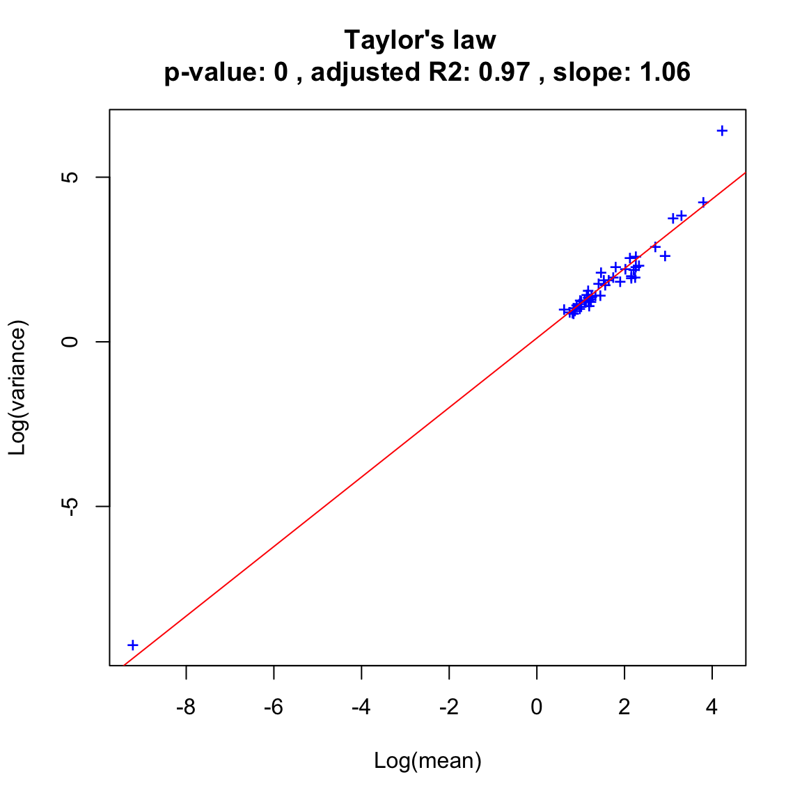
When we compute noise types in the community time series generated with SOI, we find that pink noise dominates.
soi.noise=identifyNoisetypes(out.soi,smooth=TRUE)## [1] "Number of taxa below the abundance threshold: 1"
## [1] "Number of taxa with non-significant power spectrum laws: 0"
## [1] "Number of taxa with non-classified power spectrum: 24"
## [1] "Number of taxa with white noise: 2"
## [1] "Number of taxa with pink noise: 21"
## [1] "Number of taxa with brown noise: 2"
## [1] "Number of taxa with black noise: 0"plotNoisetypes(soi.noise)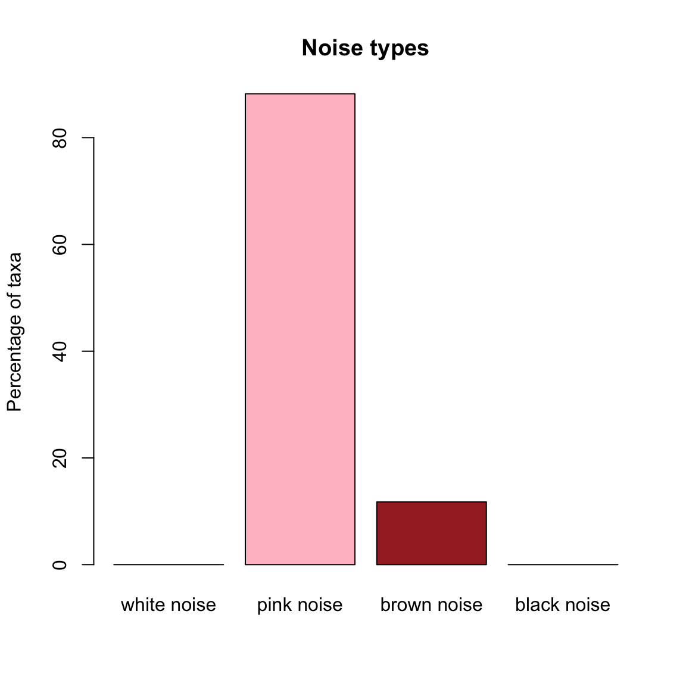
Next, we generate a community time series with the Hubbell model, which describes neutral community dynamics. We set the number of species in the local and in the meta-community as well as the number of deaths to N and assign 1500 individuals. The immigration rate m is set to 0.1. We skip the first 500 steps of transient dynamics.
out.hubbell=simHubbell(N=N, M=N,I=1500,d=N, m.vector=(y/sum(y)), m=0.1, tskip=500, tend=1000)
tsplot(out.hubbell,main="Hubbell")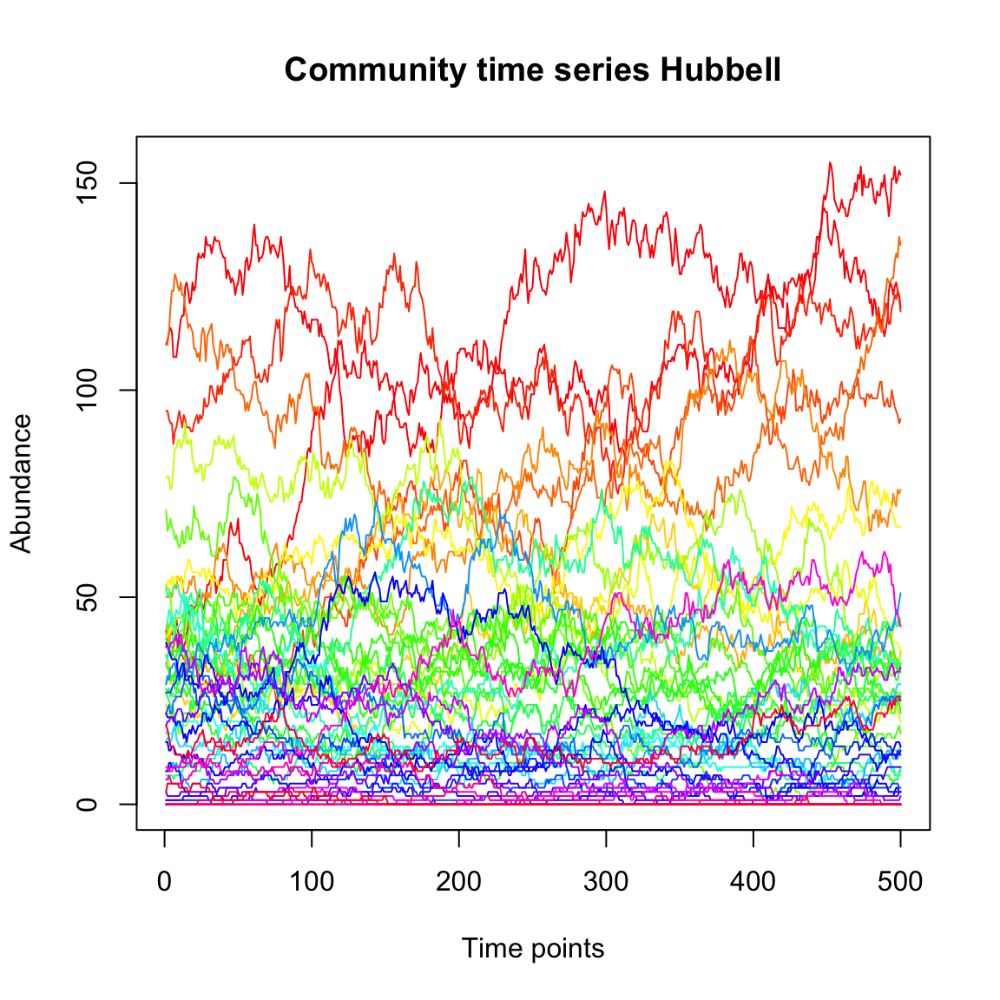
The neutral dynamics fits the Taylor law well:
hubbell.taylor=seqtime::taylor(out.hubbell, pseudo=0.0001, col="blue", type="taylor")## Warning in arrows(logmeans[val.index], upperConfV[val.index],
## logmeans[val.index], : zero-length arrow is of indeterminate angle and so
## skipped## Warning in arrows(logmeans[val.index], lowerConfV[val.index],
## logmeans[val.index], : zero-length arrow is of indeterminate angle and so
## skipped## Warning in arrows(upperConfM[val.index], logvars[val.index],
## lowerConfM[val.index], : zero-length arrow is of indeterminate angle and so
## skipped## Warning in arrows(lowerConfM[val.index], logvars[val.index],
## upperConfM[val.index], : zero-length arrow is of indeterminate angle and so
## skipped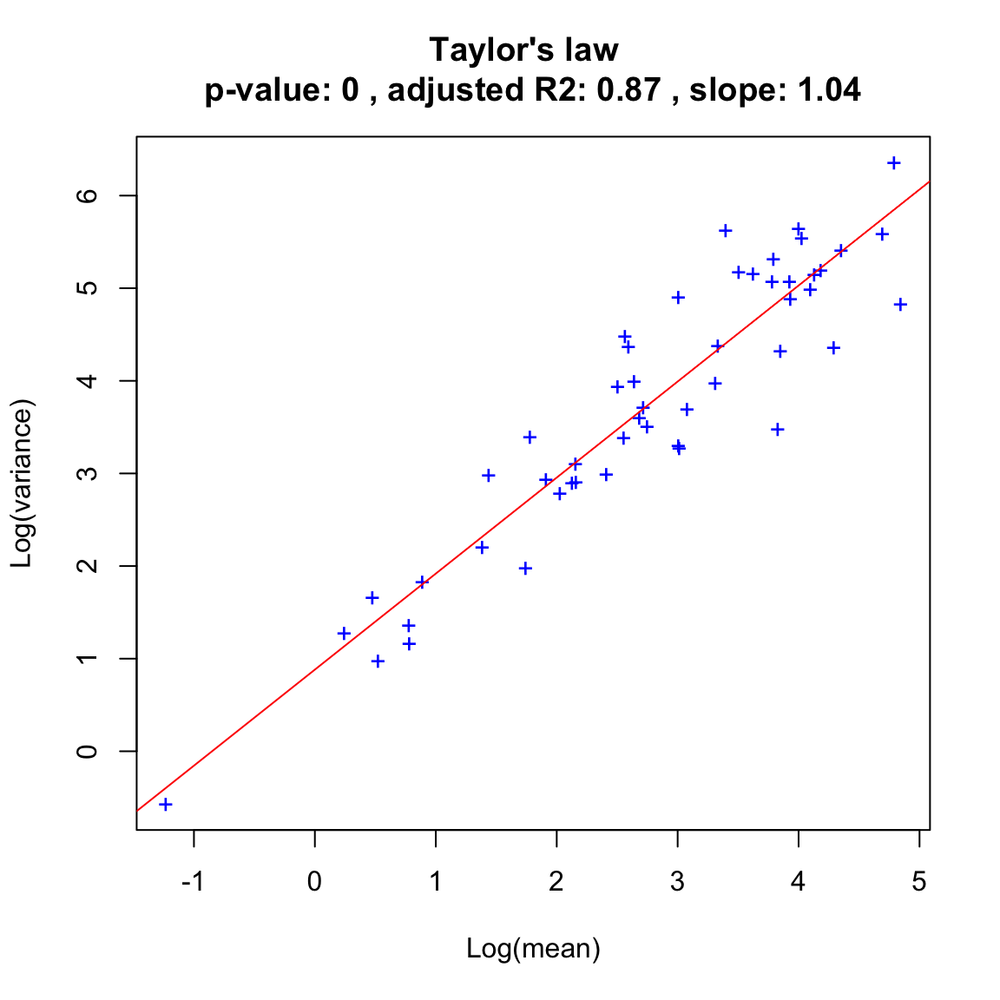
The Hubbell time series is dominated by brown noise:
hubbell.noise=identifyNoisetypes(out.hubbell,smooth=TRUE)## [1] "Number of taxa below the abundance threshold: 1"
## [1] "Number of taxa with non-significant power spectrum laws: 0"
## [1] "Number of taxa with non-classified power spectrum: 6"
## [1] "Number of taxa with white noise: 0"
## [1] "Number of taxa with pink noise: 0"
## [1] "Number of taxa with brown noise: 43"
## [1] "Number of taxa with black noise: 0"plotNoisetypes(hubbell.noise)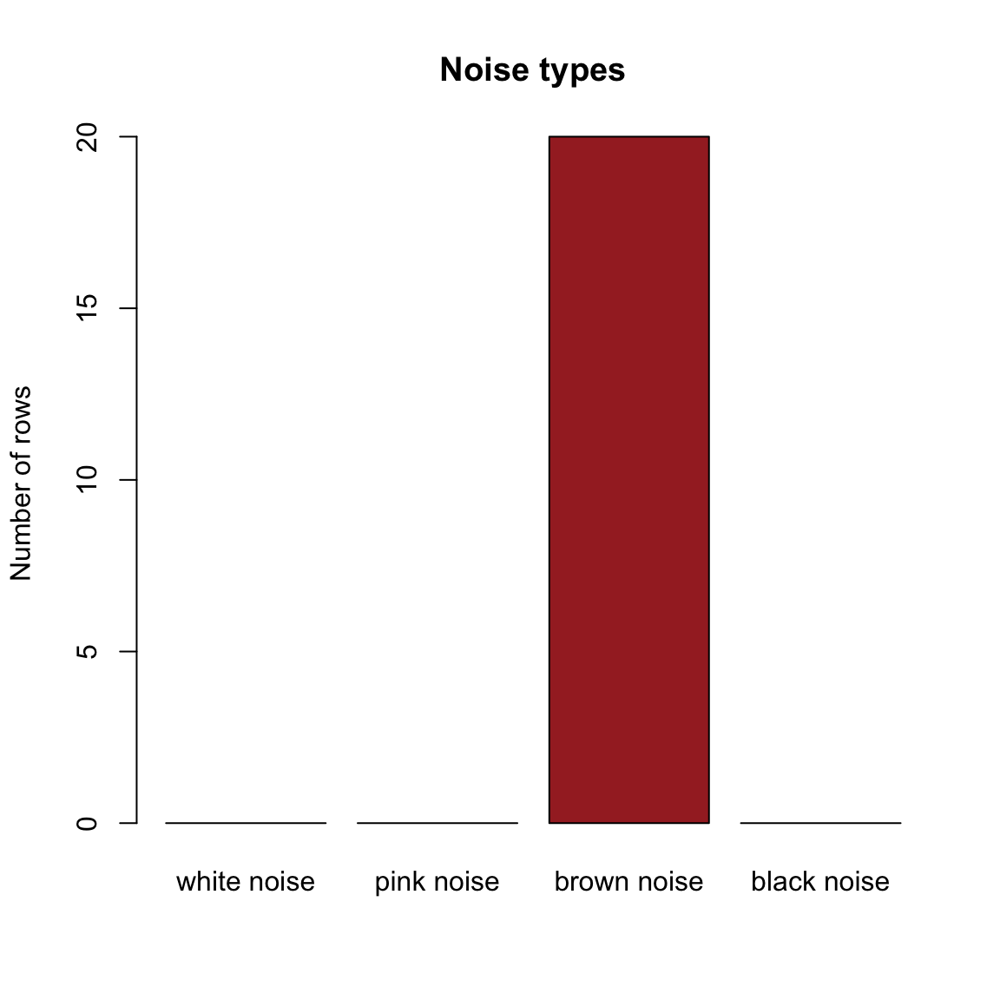
Finally, we generate a community with the Dirichlet Multinomial distribution, which in contrast to the three previous models does not introduce a dependency between time points.
dm.uneven=simCountMat(N,samples=100,mode=5,k=0.05)
tsplot(dm.uneven,main="Dirichlet-Multinomial")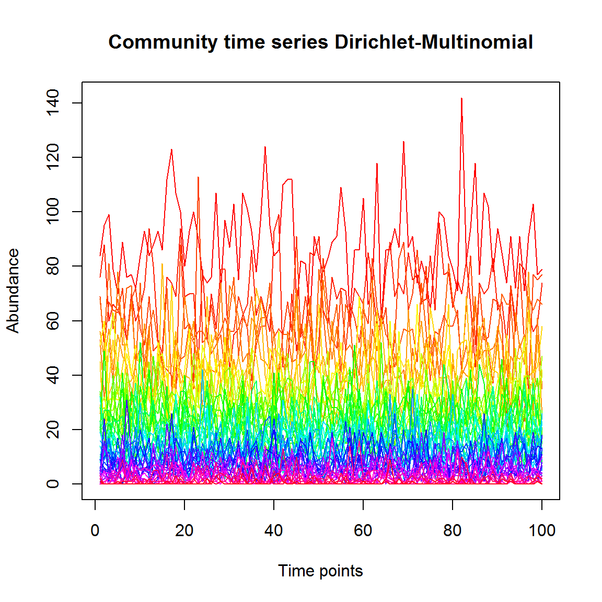
We plot its Taylor law.
dm.uneven.taylor=seqtime::taylor(dm.uneven, pseudo=0.0001, col="orange", type="taylor", header="Dirichlet-Multinomial")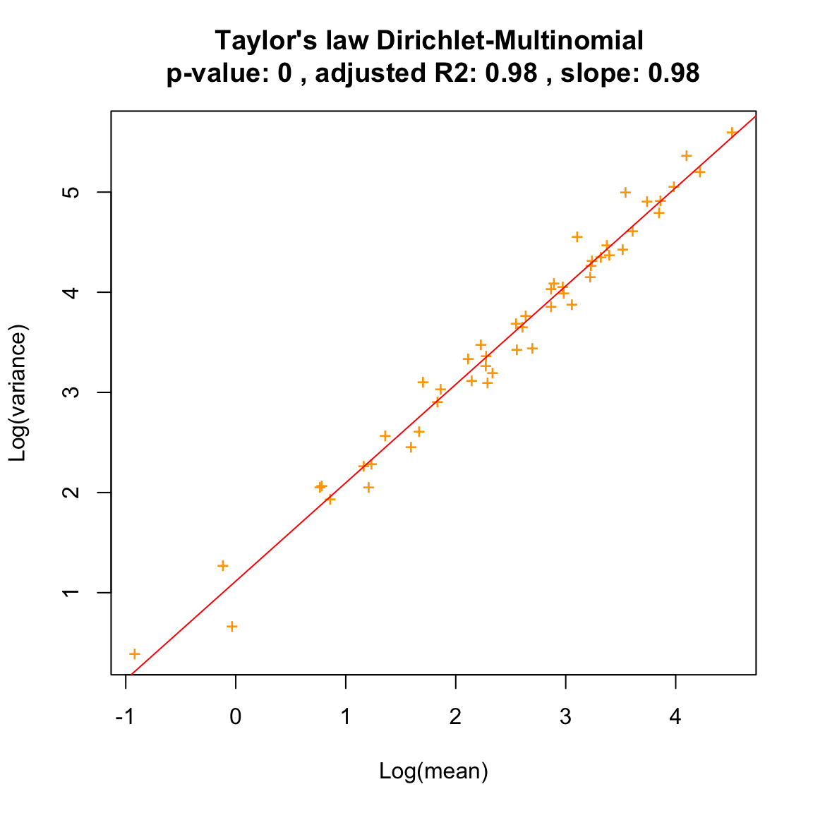
As expected, samples generated with the Dirichlet-Multinomial distribution do not display pink, brown or black noise.
dm.uneven.noise=identifyNoisetypes(dm.uneven,smooth=TRUE)## [1] "Number of taxa below the abundance threshold: 0"
## [1] "Number of taxa with non-significant power spectrum laws: 0"
## [1] "Number of taxa with non-classified power spectrum: 16"
## [1] "Number of taxa with white noise: 34"
## [1] "Number of taxa with pink noise: 0"
## [1] "Number of taxa with brown noise: 0"
## [1] "Number of taxa with black noise: 0"plotNoisetypes(dm.uneven.noise)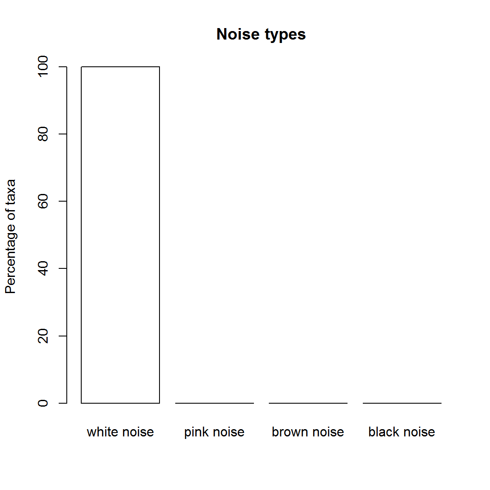
The evenness of the species proportion vector given to the Dirichlet-Multinomial distribution influences the slope of the Taylor law:
dm.even=simCountMat(N,samples=100,mode=1)
dm.even.taylor=seqtime::taylor(dm.even, pseudo=0.0001, col="orange", type="taylor", header="Even Dirichlet-Multinomial")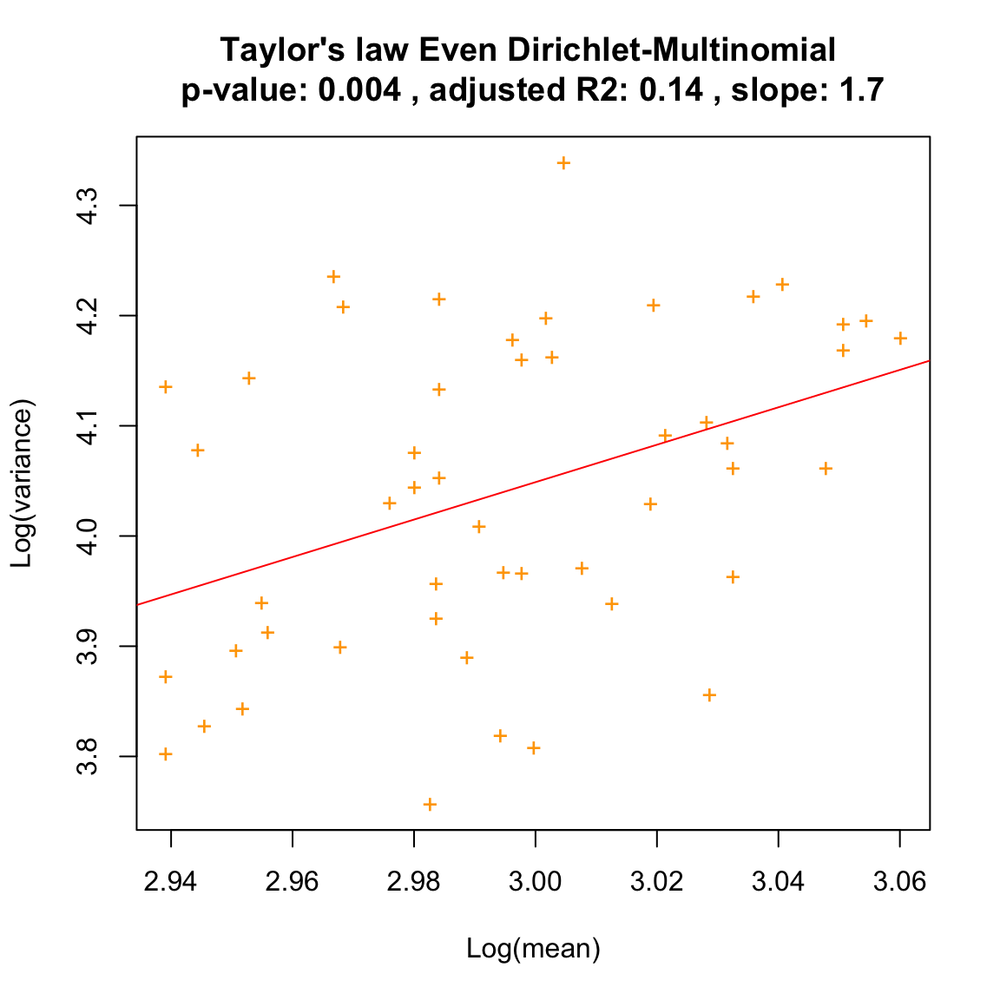
For further examples on simulating noise, see noise_simulations.html.